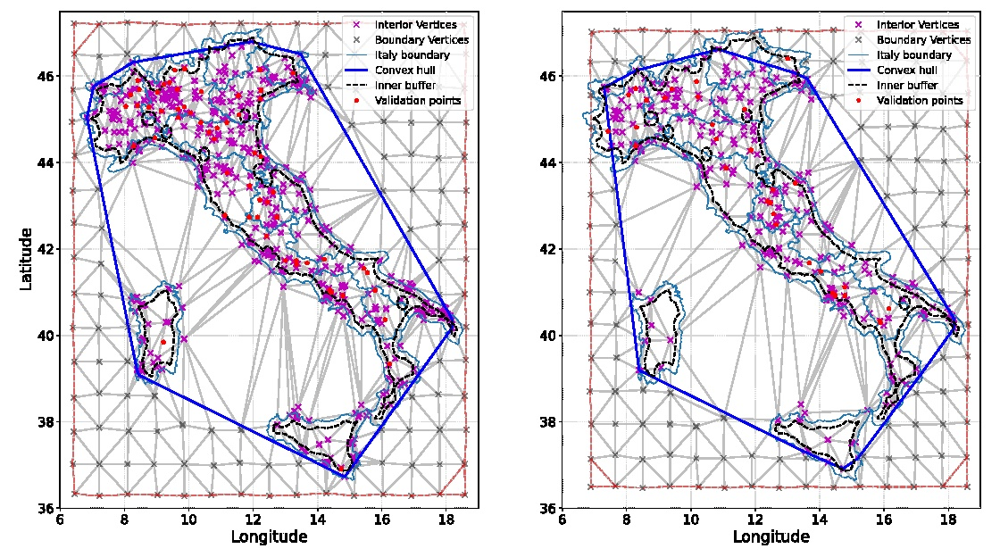

<div class="wrapper style1">
    <div class="container">
        <div class="row gtr-200">
            <div class="col-8 col-12-mobile" id="content">
                <article id="main">
                    <header>
                        <h1>{{ page.title | escape }}</h1>
                        <p>Jacopo Rodeschini, Lorenzo Tedesco, Francesco Finazzi, Philipp Otto and Alessandro Fassò (2026). <a href="https://doi.org/10.1016/j.spasta.2026.100971">Multivariate low-rank state–space model with SPDE approach for high-dimensional data</a>. <em>Spatial Statistics</em>, 73, 100971.</p>
                    </header>

                    <section aria-labelledby="summary">
                        <h2 id="summary">Summary</h2>
                        <p><strong><code>geossm</code> is an open-source Python package for fitting geostatistical state-space models and mapping spatial processes that evolve over time.</strong> It takes observations in a GeoPandas <code>GeoDataFrame</code> and supports joint modelling of variables measured at different sets of locations. For example, PM₁₀ and PM₂.₅ monitors may only partially overlap. The model can use their estimated cross-dependence, alongside weather covariates and nearby observations, to predict each pollutant and quantify prediction uncertainty.</p>
                        <p>Consider <code>geossm</code> for dynamic kriging or spatial gap filling when measurements can be aligned to a regular time grid and a linear-Gaussian model is appropriate. Missing site–time responses can remain missing during fitting. The low-rank prediction workflow described here targets unsampled sites within the fitted time period. Its test at held-out stations evaluates spatial interpolation, so it answers a different question from forecasting at future times.</p>
                    </section>

                    <section aria-labelledby="model">
                        <h2 id="model">How the low-rank state-space model works</h2>
                        <p>The observation equation combines covariate effects with a linear combination of latent spatial fields and measurement noise. Shared latent fields create cross-variable dependence even when changes in the variables are observed at different locations. The state equation evolves those fields through an autoregressive transition with spatially correlated Gaussian innovations. In compact notation, with \(H_t\) projecting the states to observation locations and incorporating the coregionalisation loadings, the model is</p>
                        <p class="paper-equation">\[y_t = X_t\beta + H_t z_t + \varepsilon_t,\qquad z_t = F z_{t-1} + \eta_t.\]</p>
                        <p>A stochastic partial differential equation (SPDE) gives a finite-element approximation to the Matérn innovation field. The mesh defines the spatial basis, and its coefficients form the latent state. Fewer vertices reduce the state dimension and computation, with a potential loss of fine-scale resolution. The paper studies the convergence of the approximation as the discretisation is refined and gives a prediction error bound for the approximation.</p>
                        <p>Parameter estimation uses maximum likelihood via expectation–maximisation (EM). The Kalman filter and smoother infer the latent state from available observations in the expectation step. The maximisation step has closed-form updates for many parameters and numerical optimisation for the remainder. The package uses JAX for numerical computation and automatic differentiation. Rank selection is a model choice: assess prediction error at the locations or spatial blocks that match the intended use.</p>
                    </section>

                    <section aria-labelledby="evidence">
                        <h2 id="evidence">What the Italian air-quality study found</h2>
                        <p>The paper jointly models daily PM₁₀ and PM₂.₅ concentrations over 2,009 days at 661 stations in Italy. The pollutants are observed at partially overlapping sites, with substantial missingness. The authors reserved approximately 10% of sites per pollutant for validation and excluded sites close to the domain boundary from the holdout. Table 5 of the paper reports the following comparison between the reference mesh and the coarsest mesh.</p>
                        <div class="table-wrapper">
                            <table class="default">
                                <thead>
                                    <tr><th scope="col">Mesh level</th><th scope="col">Estimation time</th><th scope="col">PM₁₀ validation RMSE</th><th scope="col">PM₂.₅ validation RMSE</th></tr>
                                </thead>
                                <tbody>
                                    <tr><th scope="row">100% reference</th><td>12,360 s</td><td>6.92 µg/m³</td><td>5.84 µg/m³</td></tr>
                                    <tr><th scope="row">25% of reference</th><td>780 s</td><td>6.88 µg/m³</td><td>6.69 µg/m³</td></tr>
                                </tbody>
                            </table>
                        </div>
                        <p>At 25% of the reference mesh size, the reported fit was about 15.8 times faster. PM₁₀ validation RMSE was nearly unchanged and PM₂.₅ RMSE rose by about 15%. This benchmark illustrates why mesh resolution should be checked separately for each response. Runtime and prediction accuracy depend on hardware, mesh geometry and the dataset.</p>
                        <figure>
                            <span class="image fit"></span>
                            <figcaption>Finite-element meshes in the Italy case study. Figure 6, cropped from <a href="https://doi.org/10.1016/j.spasta.2026.100971">Rodeschini et al. (2026)</a>, <a href="https://creativecommons.org/licenses/by/4.0/">CC BY 4.0</a>.</figcaption>
                        </figure>
                    </section>

                    <section aria-labelledby="quickstart">
                        <h2 id="quickstart">Fit a first model in Python</h2>
                        <p>The <a href="https://jacoporodeschini.github.io/geossm/installation.html">installation guide</a> documents Linux x86-64 and Python 3.10 or later. Install the package from PyPI in that environment.</p>
                        <pre class="paper-code"><code>python -m pip install geossm</code></pre>
                        <p>This example follows the <a href="https://jacoporodeschini.github.io/geossm/quickstart.html">official 3.x quick start</a>. It uses the bundled <a href="agrimonia.html">Agrimonia data</a> to fit a univariate PM₁₀ model with temperature. Use one formula per response for a joint fit and follow the package’s multivariate examples for the corresponding covariance setup.</p>
                        <pre class="paper-code"><code class="language-python">from geossm.covmodel import SPDEApproxCov
from geossm.covmodel.utils import buildMesh2d
from geossm.datasets import load_dataset
from geossm.stmodel import LRStateSpaceModel

observations, region = load_dataset("agrimonia")
region_geometry = region.geometry.iloc[0]
mainland = max(region_geometry.geoms, key=lambda part: part.area)
domain = [mainland.buffer(0.3)]

model = LRStateSpaceModel(
    observations, ["AQ_pm10 ~ 1 + WE_temp_2m"], domain=domain
)
mesh, _ = buildMesh2d(model.points[0], lowrank=0.5, domain=domain)
covariance = SPDEApproxCov(latlon=True).setup(mesh, domain=domain)
model = model.setup(cov_fun=[covariance])
results = model.fit()
print(results.summary())</code></pre>
                        <p>For your own data, supply a long-format <code>GeoDataFrame</code> with site geometry, regularly spaced timestamps, numeric responses and the formula covariates. The example uses longitude and latitude. Project both the data and domain if you need a planar mesh in metric units. For interpolation, <code>results.predict(prediction_data)</code> returns the estimated mean and pointwise variance for rows with valid covariates and timestamps in the training period. Use held-out stations for a new-site accuracy assessment.</p>
                    </section>

                    <section aria-labelledby="citation-links">
                        <h2 id="citation-links">Software, documentation and paper</h2>
                        <p>Install <code>geossm</code> from PyPI, use the package documentation for the current API, and record the installed version when reporting results. Cite Rodeschini et al. (2026) when using the low-rank SPDE state-space method. The paper’s replication repository contains the scripts for the published analysis.</p>
                        <p><a class="button" href="https://pypi.org/project/geossm/">PyPI</a> <a class="button" href="https://jacoporodeschini.github.io/geossm/">Documentation</a> <a class="button" href="https://github.com/jacopoRodeschini/geossm">Source code</a> <a class="button" href="https://doi.org/10.1016/j.spasta.2026.100971">Open-access paper</a> <a class="button" href="https://github.com/jacopoRodeschini/Low_Rank_State_Space_Model">Paper replication code</a></p>
                    </section>
                </article>
            </div>
            <aside class="col-4 col-12-mobile" id="sidebar" aria-labelledby="on-this-page">
                <hr class="first" />
                <section>
                    <h3 id="on-this-page">On this page</h3>
                    <ul>
                        <li><a href="#model">Model and estimation</a></li>
                        <li><a href="#evidence">Italian air-quality study</a></li>
                        <li><a href="#quickstart">Python quick start</a></li>
                        <li><a href="#citation-links">Software and paper</a></li>
                    </ul>
                </section>
                <section aria-labelledby="related-research">
                    <h3 id="related-research">Related research</h3>
                    <ul>
                        <li><a href="agrimonia.html">Agrimonia air-quality data</a></li>
                        <li><a href="reviewregularised.html">Cross-validation for spatiotemporal data</a></li>
                    </ul>
                </section>
            </aside>
        </div>
    </div>
</div>
